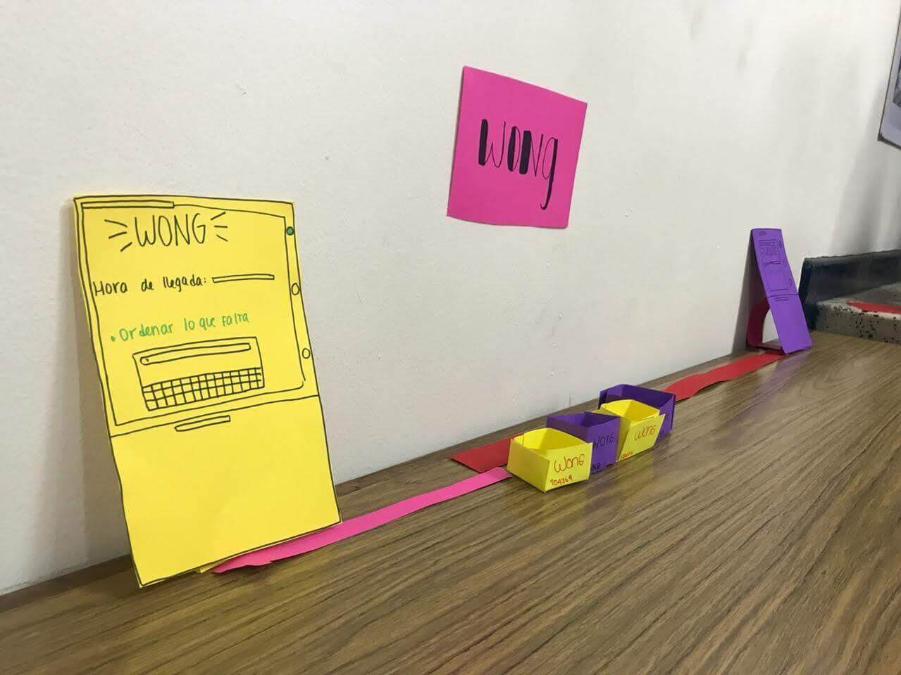

Has viajado al año 2030, y estás apunto de ver cómo viven las
personas …
Verás una casa que te escuche, te entienda y responda según tus gustos y preferencias. Sin embargo,
muchos negocios han desaparecido por la falta de innovación.
Necesitamos imaginar hoy cómo serán en el futuro.


1. Explora
Los participantes exploran los espacios simulados, los detalles de los muebles o artefactos conectados a internet y la información que proporciona el software de inteligencia artificial de Microsoft para convertirla en conocimiento.

2. Reflexiona
Luego de la observación, los participantes colocan anotaciones en los espacios y objetos que les llamaron la atención. El facilitador les ayuda a profundizar en ciertos hallazgos.
3. Desarrolla
Los participantes organizados en equipos construyen un nuevo modelo de negocio con los componentes detectados, mediante una representación con materiales de prototipado rápido.
4. Comparte
Finalmente cada equipo presenta y comparte su modelo de negocio del futuro al resto de los participantes, donde reciben retroalimentación, y se genera una conversación para detectar oportunidades de implementación en el presente.

• Puede ser una sesión de 4 horas o full day de 8 horas.
• Se requiere de ½ hora para instalar el espacio si es fuera de UCAL.
• Los espacios simulados se adaptan a la mayoría de ambientes fuera de UCAL.
• Incluye materiales de exploración e prototipado.
• Se registra de forma audiovisual para posterior análisis y difusión de ser requerido.
• Es facilitado por 1 especialista y 1 asistente de producción.
• Contacto: Jorge del Carpio
• Email: jdelcarpio@ucal.edu.pe
• Telf: (01) 622-2222 Anexo: 5522
• Campus: Av. La Molina 3755. Lima, Perú.
ELLA HA SIDO PRESENTADA COMO UN SER QUE NO ES Y CON ASPIRACIONES QUE NO TIENE, LA HAN ENCERRADO EN UN CUADRO QUE PARECE NO TENER SALIDA.
TÚ PUEDES CAMBIAR ESO.
Más experimentos
Conoce más dando click en cada uno de ellos